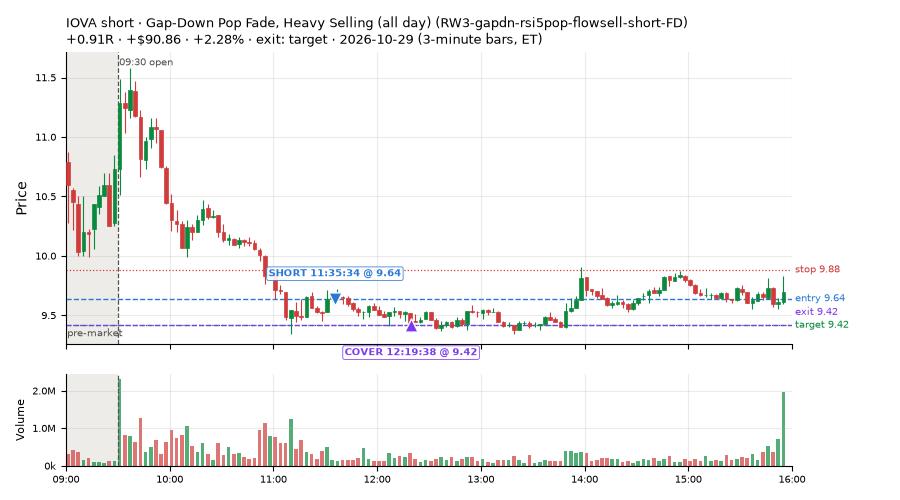
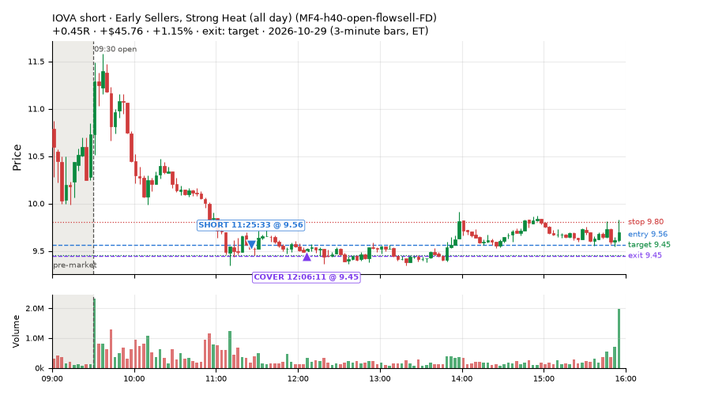
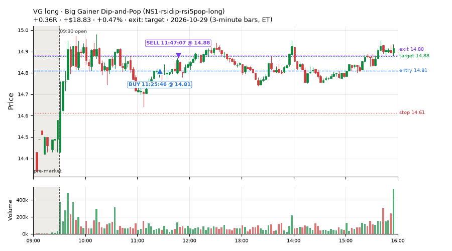
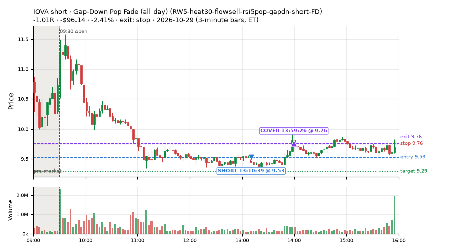
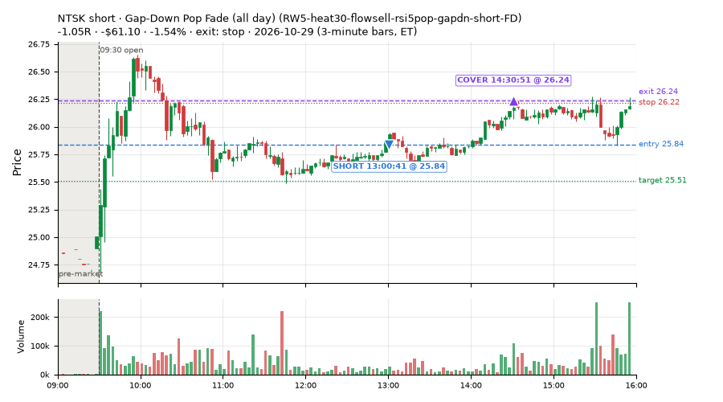
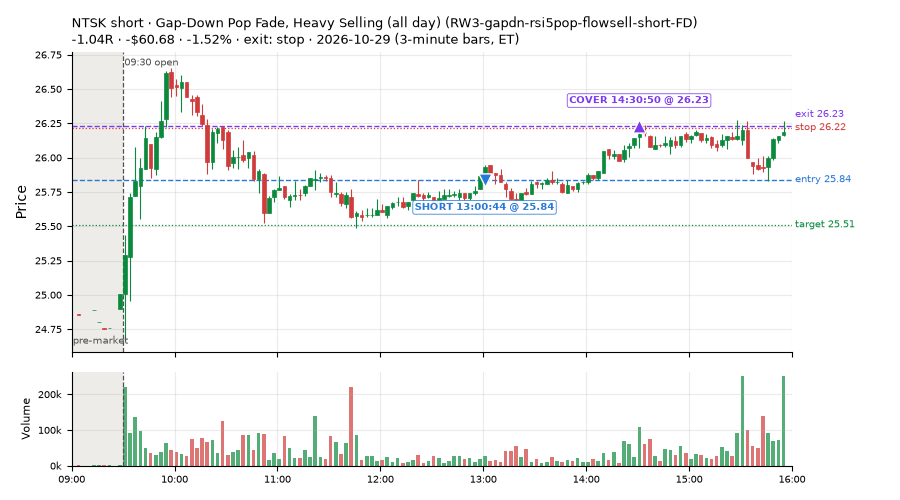
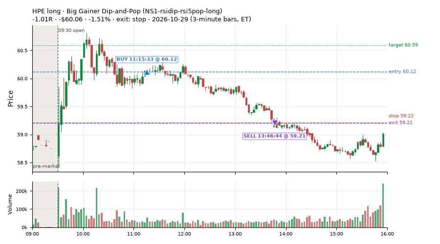
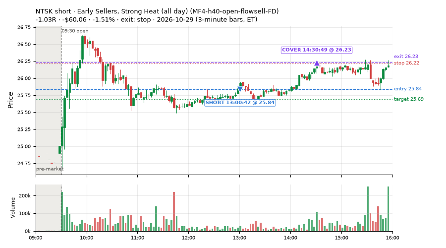

16 trades · win rate 25% · P/L $-385.14
PROBATION: no live setup has passed both locked test periods. 10 owner-directed setups added 2026-10-08 (MarcoFlow top 5 + 5 new), untested live. RW6G1 (RW6 + VWAP band guard) added 2026-10-09, probation.

| Symbol | Setup | Side | In | Out | Entry | Exit | Exit reason | % gained | P/L |
|---|---|---|---|---|---|---|---|---|---|
| IOVA | Gap-Down Pop Fade, Heavy Selling (all day) (RW3-gapdn-rsi5pop-flowsell-short-FD) | short | 11:35 | 12:19 | 9.64 | 9.42 | target | +2.28% | $90.86 |
| IOVA | Early Sellers, Strong Heat (all day) (MF4-h40-open-flowsell-FD) | short | 11:25 | 12:06 | 9.56 | 9.45 | target | +1.15% | $45.76 |
| VG | Big Gainer Dip-and-Pop (NS1-rsidip-rsi5pop-long) | long | 11:25 | 11:47 | 14.81 | 14.88 | target | +0.47% | $18.83 |
| Symbol | Setup | Side | In | Out | Entry | Exit | Exit reason | % lost | P/L |
|---|---|---|---|---|---|---|---|---|---|
| IOVA | RW5-heat30-flowsell-rsi5pop-gapdn-short-FD | short | 13:10 | 13:59 | 9.53 | 9.76 | stop | -2.41% | $-96.14 |
| NTSK | RW5-heat30-flowsell-rsi5pop-gapdn-short-FD | short | 13:00 | 14:30 | 25.84 | 26.24 | stop | -1.54% | $-61.10 |
| NTSK | RW3-gapdn-rsi5pop-flowsell-short-FD | short | 13:00 | 14:30 | 25.84 | 26.23 | stop | -1.52% | $-60.68 |
| HPE | NS1-rsidip-rsi5pop-long | long | 11:15 | 13:46 | 60.12 | 59.21 | stop | -1.51% | $-60.06 |
| NTSK | MF4-h40-open-flowsell-FD | short | 13:00 | 14:30 | 25.84 | 26.23 | stop | -1.51% | $-60.06 |








Signal to fill: median 1s, 90th percentile 3s (16 trades). Bars close each minute; the order follows the bar close.
Best excursion (MFE): median 0.42R; worst (MAE) median 1.03R. 25% of trades never got +0.25R in our favour; 1 reached +1R and still closed at or below 0.
| Symbol | Setup | Best R | Worst R | Closed R |
|---|---|---|---|---|
| U | MF2-open-rsimidhi-flowsell-FD | +1.03 | -1.13 | -1.04 |
| IOVA | RW5-heat30-flowsell-rsi5pop-gapdn-short-FD | +0.81 | -1.67 | -1.01 |
| DEO | MF2-open-rsimidhi-flowsell-FD | +0.59 | -1.05 | -1.08 |
| WDAY | RW3-gapdn-rsi5pop-flowsell-short-FD | +0.47 | -1.04 | -1.08 |
| NTSK | RW5-heat30-flowsell-rsi5pop-gapdn-short-FD | +0.42 | -1.00 | -1.05 |
| Entry time | Trades | Win | Avg R | P/L |
|---|---|---|---|---|
| 10:30-11:30 | 8 | 38% | -0.51 | $-107.31 |
| 11:30-13:00 | 3 | 33% | -0.46 | $12.09 |
| 13:00-14:00 | 5 | 0% | -1.04 | $-289.92 |
| Setup | Trades | Win | Avg R | Adj R (net of SPY) | P/L |
|---|---|---|---|---|---|
| Early Sellers, Mid-High RSI (all day) (MF2-open-rsimidhi-flowsell-FD) | 2.0 | 0% | -1.06 | -1.32 | $-32.52 |
| Early Sellers, Strong Heat (all day) (MF4-h40-open-flowsell-FD) | 4.0 | 25% | -0.69 | -0.79 | $-102.28 |
| Big Gainer Dip-and-Pop (NS1-rsidip-rsi5pop-long) owner-directed; holdouts once: Sep-Oct +0.326R n10, Apr-Jun +0.056R n119 | 3.0 | 67% | -0.08 | +0.17 | $-31.77 |
| Gap-Down Pop Fade, Heavy Selling (all day) (RW3-gapdn-rsi5pop-flowsell-short-FD) | 3.0 | 33% | -0.40 | -0.53 | $-1.82 |
| Gap-Down Pop Fade (all day) (RW5-heat30-flowsell-rsi5pop-gapdn-short-FD) | 3.0 | 0% | -1.07 | -1.20 | $-193.57 |
| RSI Collapse Dip Buy (all day) (ST7-rsi50dn-long-pm-t1s1-FD) | 1.0 | 0% | -1.17 | -1.17 | $-23.18 |
Market direction (SPY, beta 1) accounted for $31.91 of today's $-385.14; the rest ($-417.05) came from the setups themselves. Avg R net of SPY: -0.73 (incl. a hedge leg's cost; report only).
8 setups live today. Today: 35 signals, 16 taken, 1 lost because another setup held the symbol (3%). Since 2026-10-06 (18 sessions): 1174 signals, 732 taken, 87 lost to other setups (7%). Peak open positions today 7 of 77 slots. Earnings blackout removed 1490 symbols before scanning.
Simulated playing time (not live): 440 what-if trades of signals not taken, avg +0.01R, 55% winners; of them 87 lost to another setup (avg +0.01R).
Silent: intraday_momentum · Crowded out: MF4-h40-open-flowsell, MF3-open-flowsell-rsi5hi, MF5-flowsell-vwapup-rsi5hi · Starved: MF2-open-rsimidhi-flowsell
| Prio | Setup | Today sig / taken | Sessions | Signals / taken / trades | Taken/day | Expected/day | Lost to other setups | Lost to (setup n) | Top skip reasons | SIMULATED: not-taken n / avg R / win | Verdict |
|---|---|---|---|---|---|---|---|---|---|---|---|
| 1 | Gap-Down Pop Fade (all day) RW5-heat30-flowsell-rsi5pop-gapdn-short-FD | 7 / 3 | 10 | 87 / 69 / 69 | 6.90 | 12.79 | 0 | – | spread / quote / size 12, not shortable / shorts off 5, daily loss cap 1 | 18 / -0.08R / 44% | ok 34.5 entries/week |
| 2 | Gap-Down Pop Fade, Heavy Selling (all day) RW3-gapdn-rsi5pop-flowsell-short-FD | 4 / 3 | 10 | 68 / 49 / 49 | 4.90 | 13.59 | 1 | CWT14-failbrk-pdl-p10-lowvol-long 1 | spread / quote / size 10, not shortable / shorts off 8, symbol held by another setup 1 | 19 / +0.24R / 58% | ok 24.5 entries/week |
| 3 | Early Sellers, Mid-High RSI (all day) MF2-open-rsimidhi-flowsell-FD | 7 / 2 | 8 | 54 / 38 / 38 | 4.75 | 10.09 | 4 | RW5-heat30-flowsell-rsi5pop-gapdn-short-FD 4, RW3-gapdn-rsi5pop-flowsell-short-FD 4, MF2-open-rsimidhi-flowsell-FD 4 | not shortable / shorts off 6, spread / quote / size 6, symbol held by another setup 4 | 16 / +0.25R / 50% | ok 23.8 entries/week |
| 4 | Early Sellers, Strong Heat (all day) MF4-h40-open-flowsell-FD | 11 / 4 | 8 | 66 / 37 / 37 | 4.62 | 16.45 | 4 | RW5-heat30-flowsell-rsi5pop-gapdn-short-FD 4, RW3-gapdn-rsi5pop-flowsell-short-FD 4, MF2-open-rsimidhi-flowsell-FD 3 | not shortable / shorts off 11, spread / quote / size 11, symbol held by another setup 4 | 29 / +0.02R / 69% | ok 23.1 entries/week |
| 5 | RSI Collapse Dip Buy (all day) ST7-rsi50dn-long-pm-t1s1-FD | 1 / 1 | 4 | 4 / 3 / 3 | 0.75 | 2.17 | 0 | – | spread / quote / size 1 | 1 / +0.76R / 100% | slow 3.8 entries/week; ~16 weeks to 60 trades |
| 6 | Big Gainer Dip-and-Pop NS1-rsidip-rsi5pop-long | 4 / 3 | 16 | 15 / 12 / 12 | 0.75 | 0.92 | 0 | – | spread / quote / size 3 | 3 / +0.40R / 100% | slow 3.8 entries/week; ~16 weeks to 60 trades |
| 7 | Big Loser Flush Buy NS5-sma50-flush-oversold-long | 0 / 0 | 16 | 19 / 16 / 16 | 1.00 | 2.41 | 0 | – | spread / quote / size 3 | 3 / +0.92R / 100% | slow 5.0 entries/week; ~12 weeks to 60 trades |
| 8 | Early Sellers, Strong Heat MF4-h40-open-flowsell | 1 / 0 | 16 | 61 / 21 / 21 | 1.31 | 7.24 | 20 | MF4-h40-open-flowsell-FD 15, MF3-open-flowsell-rsi5hi-FD 4, MF3-open-flowsell-rsi5hi 3 | symbol held by another setup 20, not shortable / shorts off 10, spread / quote / size 10 | 40 / -0.09R / 60% | crowded-out 20 of 61 signals (33%) lost to setups already holding the symbol |
Every trade is attached as a CSV you can open and edit in Excel or Google Sheets. Live page: https://misiti15.github.io/MCF/live/